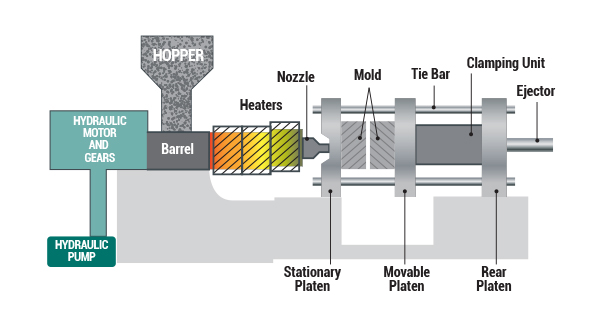
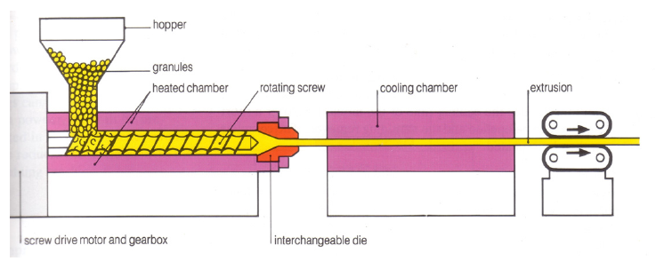
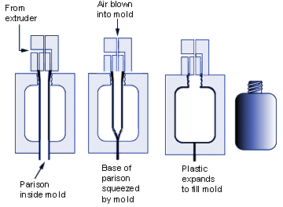
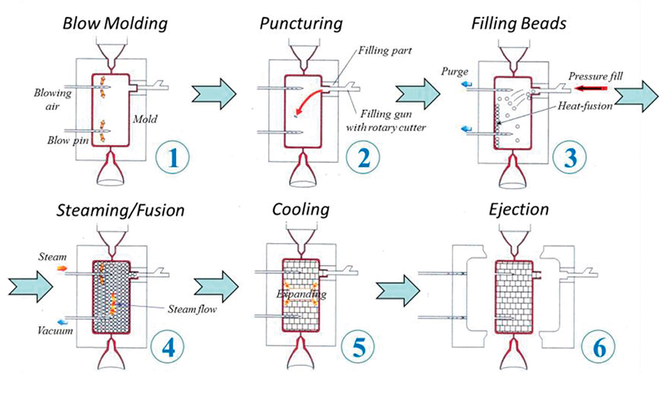
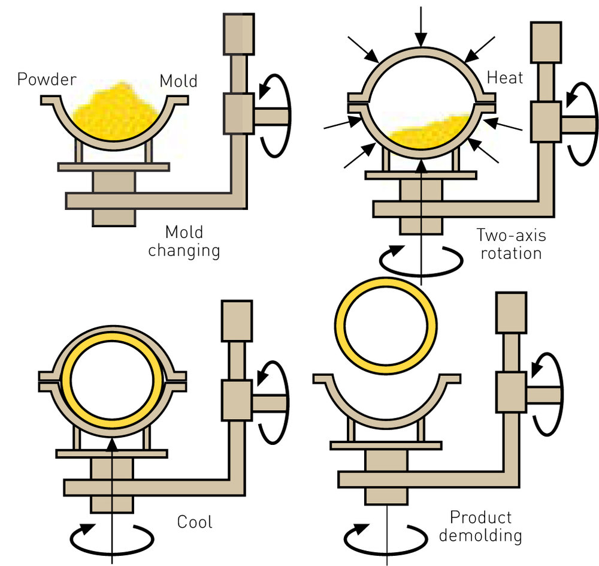
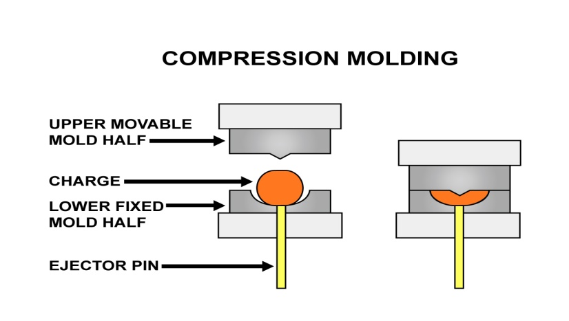
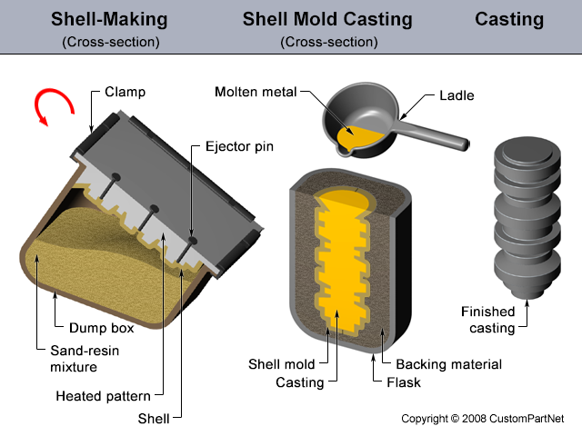
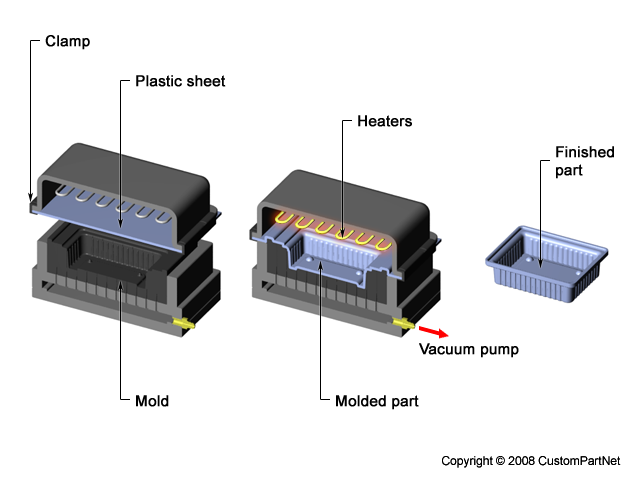

| Injection Molding |
- Creates three dimensional parts of high quality and great reproducibility
- Mostly used for thermoplastics, but can also be used for some thermosets and elastomers
- Plastic material is put into a hopper, where it goes into an extruder
- An extruder screw pushes the plastic into a heating chamber which melts the plastic
- At the end of this chamber, high pressure forces the plastic through a nozzle and into a closed cold mold, ensuring that this mold is completely filled
- Once the plastic cools, it is ejected from the mold
- Used to make: bottle caps, toys, lawn chairs, yogurt containers, butter tubs
|
 |
| Extrusion |
-
Plastic material, in the form of pellets or powder, is loaded into a hopper, where it is then moved into a heated chamber by a continuously revolving screw
- The cylindrical chamber is called an extruder, and may have more than one functional screw
- The plastic is melted by the screw or the heaters in the extruder wall
- At the end of the chamber, the molten plastic is put through a small opening and into a die, which makes the shape of the final product
- As the products are let out of the die, they are laid out on a conveyor belt or into water for cooling
- Used to make: pipe, film, coated paper, insulation on electrical wires, gutter and down spouting, window trim
|
 |
| Blow Molding |
- A molten tube can be created by blowing compressed air, which forces the plastic to conform to the mold
- Can be used in conjunction with injection molding or continuous extrusion
- In injection blow molding:
- Plastic conforms to the interior of the blow mold
- The same as injection molding, just that the plastic is stretched prior to being formed
- In extrusion:
- Molten plastic tube is continuously being created
- Needles or blow pins are forced into the mold, blow compressed air, and force the plastic to conform to the mold
- Used to make: hollow products
|
 |
| Expanded Bead Blowing |
- Begins with beads of plastic being placed into a mold
- The plastic in the beads is mixed with a gas.
- Closed mold is heated and the gas expands resulting in a closed cell structure of plastic foam that conforms to a single shape
- Used to make: expanded polystyrene cups
|
 |
| Rotational Molding |
- Solid or liquid resin is placed on a mold mounted on a machine that is able to rotating on two axes simultaneously, after which heat is applied
- The rotation spreads the plastic uniformly on the inside of the mold
- The mold is cooled until the plastic cools and hardens
- Used to make: hollow configurations
|
 |
| Compressional Molding |
- A specific volume of plastic is put into a mold cavity, after which a second mold is applied in order to mold the plastic into the desired shape
- Allowed to form due to heat and pressure
- Plastic can be thermoplastic or semi-cured thermoset
- Used to make: Semiconductor manufacturing, kitchenware
|
 |
| Casting |
- Low pressure pouring of liquid resins into a mold
- Thermoset plastics can be crafted into intricate shapes using this method
- Thermoplastic cast into slabs can be made into windows for commercial aquariums
- Used to make: complex shapes that are too inefficient to make by any other method
|
 |
| Thermoforming |
- Films of thermoplastic are heated, softening it
- Pulled by vacuum or pushed by pressure in order to conform to a mold
- Parts are thermoformed either from thick sheets or thin sheets of plastic
- At the end of the process, the parts are cut out from the sheets, and the scraps of sheet are manufactured to make new sheets
- Used to make: individual craft items or clamshell food containers
|
 |